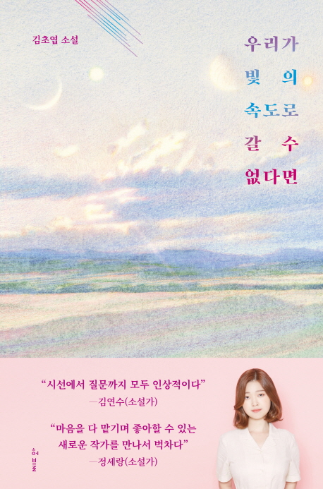

2017년, '관내분실'로 제2회 한국과학문학상 중단편부문 대상을, '우리가 빛의 속도로 갈 수 없다면'으로 가작을 동시에 받으며 작품 활동을 시작했다. 당시 심사를 맡았던 소설가 배명훈, 김보영으로부터 "작가는 스스로 질문을 던져야 하고, 작품을 통해 그 질문을 다른 사람들의 코앞에까지 내밀 수 있어야 한다. 그 일을 거친 결과, 작가와 작품은 스스로 쨍하게 아름다워진다. 이 글 '관내분실'처럼" "슬픔에 좌절하지 않고, 어쩌면 영원히 갈 수 없을지도 모르는데 자신의 인생과 생명을 걸고 그 의지를 끝까지 관철하려 한다는 데서 이 작품('우리가 빛의 속도로 갈 수 없다면')은 감동을 준다"는 평을 이끌어냈다.
